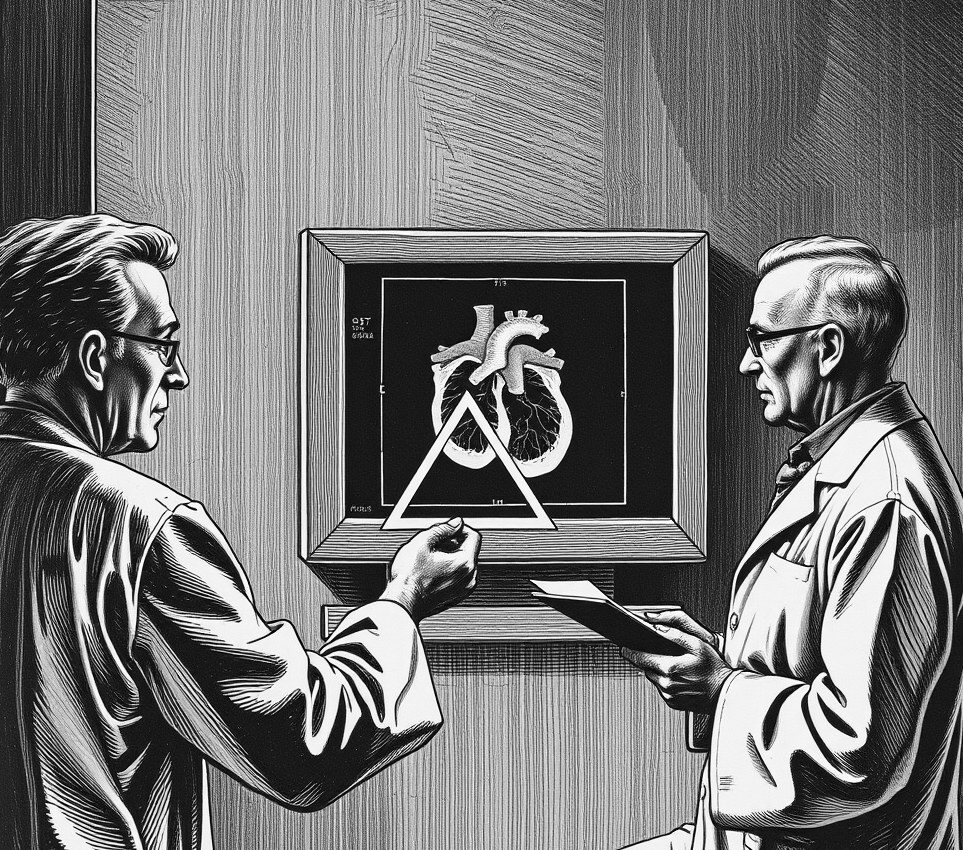

SHACKLETON DOME, THE MOON . 17 October 2168

SHACKLETON DOME, THE MOON - Cardiologists at the Shackleton Dome have confirmed that gravity on the Moon slowly compresses the human heart into a six-sided cube.
The fatal condition, known as cubic myocardial drift, halts blood circulation within five months of onset.
Despite the high mortality rate, hospital staff praise the outcome as a major victory for diagnostic filing.
"Earth hearts are messy sacks," said Dr Priya Sylvan. "They overlap with adjacent scan frames and ruin the display margins."
In low gravity, the muscle walls flatten into right angles.
This spatial symmetry allows staff to tile forty-eight chest scans onto a single screen without wasted border space.
Archival efficiency has tripled.
"Look at those corners," Sylvan said, pointing to a patient scan. "You could align them with a square."
The medical record department awarded the cardiology ward its highest honour for cataloguing speed.
The deformation is permanent once the angles lock in place.
Last month, the health board voted to ban weighted vests across the settlement.
The vests save lives.
However, they introduce soft curves back into the chest cavity, disrupting the visual order.
Patients raised minor objections regarding their survival prospects.
Sylvan dismissed the complaints, noting that the morgue ordered square boxes to maintain grid alignment after death.